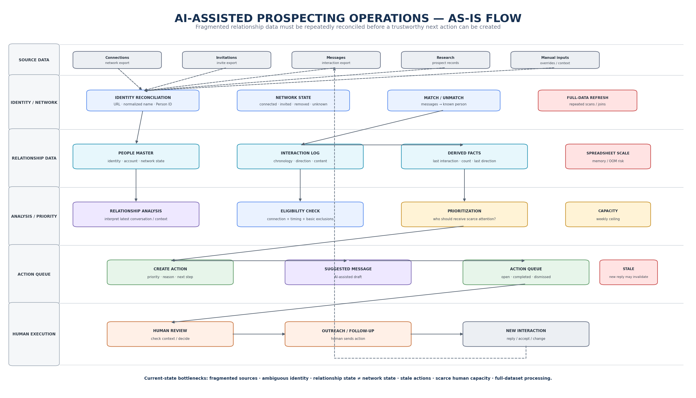
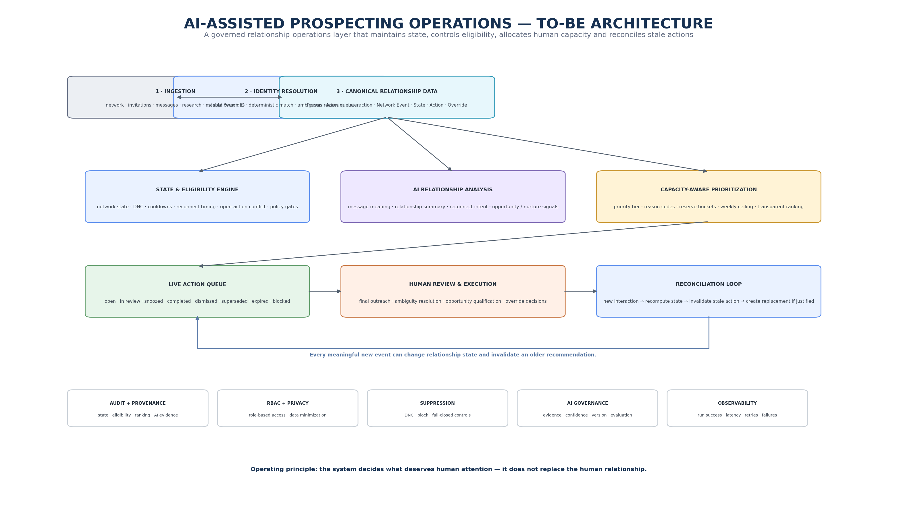
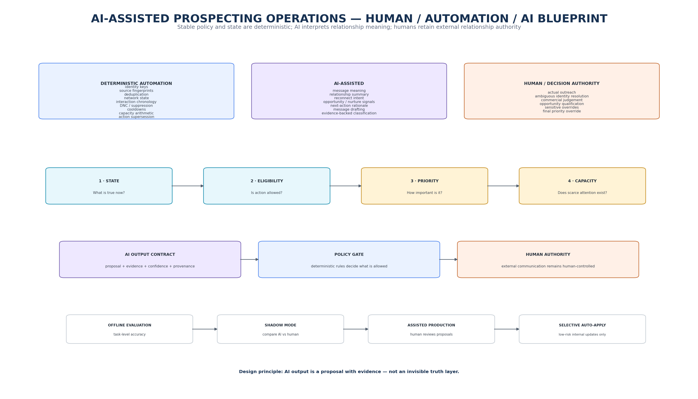
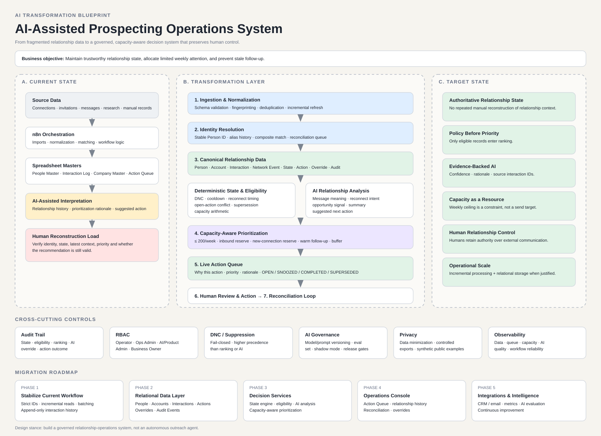

AI-Assisted Prospecting Operations System
Redesigning a fragmented relationship workflow into a governed operating layer that maintains relationship state, identifies the next best actions, allocates limited human capacity, and uses AI for interpretation while keeping external communication human-controlled.
Transformation objective
Build a relationship-operations layer that converts fragmented network and interaction data into trustworthy state, governed eligibility, transparent priority and a continuously reconciled Action Queue.
Why the current workflow breaks down
Current operating model
Target operating model
Visual process architecture
The case is easier to understand as three connected visual layers: the current fragmented operating flow, the target relationship-operations architecture, and the control boundary between deterministic automation, AI assistance and human authority.
1. AS-IS relationship operations flow

2. TO-BE relationship operations architecture

3. Human / Automation / AI blueprint

4. Executive transformation overview
Here is a one-page summary of current state, transformation layers, target state, governance controls and migration roadmap.

Human vs Automation vs AI
| Work | Primary owner | Examples |
|---|---|---|
| Stable structured logic | Deterministic automation | Identity keys, deduplication, chronology, DNC, cooldowns, capacity arithmetic, action supersession. |
| Unstructured relationship meaning | AI | Reconnect intent, message meaning, opportunity signals, relationship summary, next-action suggestion. |
| External relationship decisions | Human | Sending outreach, resolving ambiguity, opportunity qualification, commercial judgement and sensitive overrides. |
State before priority
The design intentionally separates relationship context from action eligibility.
- No interaction history
- Outbound last / Inbound last
- Active conversation
- Reconnect later
- Opportunity
- Nurture
- Do Not Contact
- Closed
- DNC and follow-up blocks
- Identity resolution
- Cooldowns
- Reconnect timing
- Existing open actions
- Newer inbound context
- Active opportunity handling
Capacity-aware prioritization
The weekly follow-up ceiling is a maximum, not a target. The system therefore treats operator capacity as a portfolio-allocation problem.
Selected requirements
SUPERSEDED.AI evaluation & governance
- Relationship-state agreement
- Reconnect-timing extraction accuracy
- Evidence-link correctness
- Unsupported-claim rate
- Human override / dismissal rate
- Offline evaluation
- Shadow mode
- Assisted production
- Selective low-risk auto-application
Migration roadmap
| Phase | Focus | Outcome |
|---|---|---|
| 1 | Stabilize current workflow | Strict IDs, incremental reads, batching and append-oriented interaction history. |
| 2 | Relational data layer | Canonical operational entities replace full-sheet scans as system complexity grows. |
| 3 | Decision services | State, eligibility, AI analysis and capacity allocation become explicit services. |
| 4 | Operations console | Action Queue, relationship history, reconciliation and overrides in one control surface. |
| 5 | Integrations & intelligence | Additional connectors, observability, evaluation and continuous improvement. |
How value would be measured
The measurement model intentionally separates system health, decision quality, operating efficiency and business outcomes so activity volume is not mistaken for value.
Architecture decision
The system should remove repeated reconciliation, state reconstruction and prioritization work while concentrating human effort on genuine conversations, relationship judgement and commercial decisions.